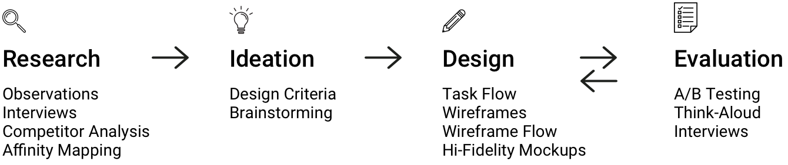
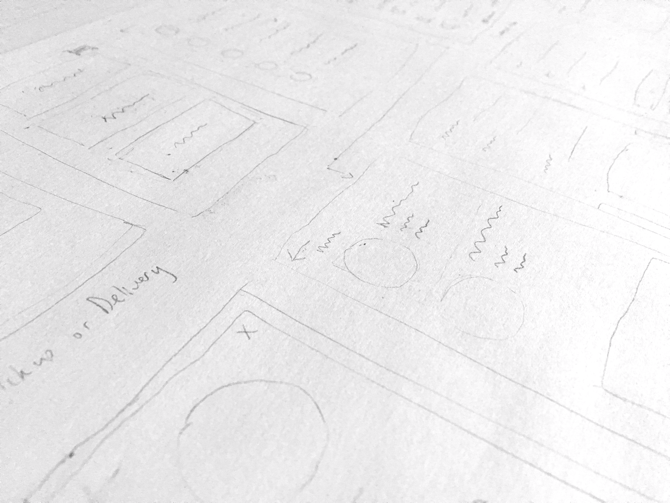
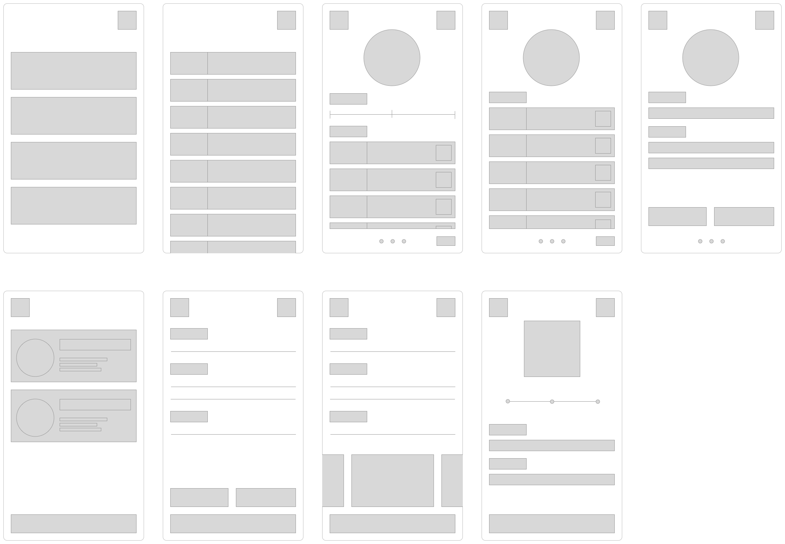
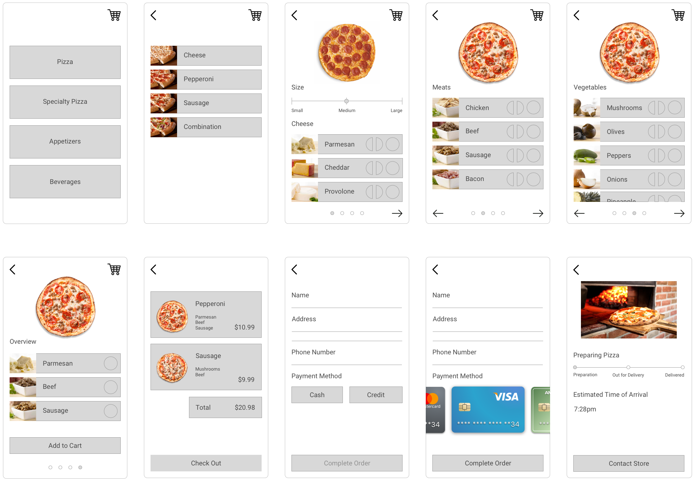
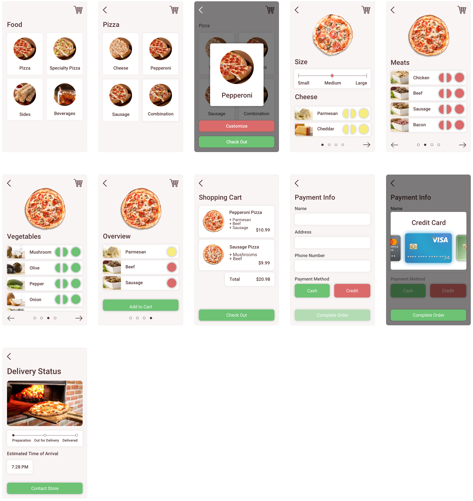

Improving the experience of ordering pizza
Problem Pizza is one of the most popular foods in Western culture. Thousands of people order pizza every day.
While many pizza services have recently updated their app and web interfaces to increase usability and promote sales, there still exists many lingering usability issues which can be improved upon.
Design Process  Research To learn more about the usability issues that users tend to face when ordering pizza online, several people who frequently ordered pizza were interviewed.
In addition, several existing pizza-delivery apps were analyzed in order to take a closer look at their user experiences. These apps included: Slice, Papa Johns, Pizza Hut, and Dominoes.
After the interviews and studies were conducted and synthesized, user research and heuristic analysis on the apps suggested that an enjoyable, intuitive pizza-ordering experience typically included:
- Pictures of food
- Minimal visual clutter
- Guided interaction flow with few steps
- Delivery status tracking
- Selecting the pizza
- Checking out with food
- Monitoring the delivery status
After creating an overall interaction flow, several features were incorporated to address the usability guidelines from the user research:
- Each ingredient listing includes an image of the ingredient
- An updating image of the pizza shows the current toppings in the customization phase
- Delivery screen conveys the pizza's status and estimated delivery time
   User Testing After the early design mock ups were created, user testing was conducted to collect feedback from users. A low-fidelity prototype was created using Invision, and users were asked to perform a benchmark task of ordering a specific pizza.
For the task, users were split into two groups. One group participated in a think-aloud activity, while the other group performed the activity silently on their own.
Observations and feedback from the user testing revealed:
- Pictures of ingredients allowed users to quickly identify ingredients
- Updating pizza image helped users to keep track of selected toppings
- Buttons for half-pie ingredients were too closely located together
- Inability to skip pizza customization slowed down the overall ordering process
- Established a visual language for interactivity
- Increased navigation flexibility by offering the option to skip through pizza customization
- Spaced out customization buttons to be more accessible

For future design iterations, there would be an emphasis on addressing other common themes from the user testing feedback, such as:
- Navigation flexibility to skip forwards or backwards in the overall ordering process
- Exploration of in-depth delivery tracking with GPS or live-streaming


Made with  by Jesse
by Jesse
by Jesse